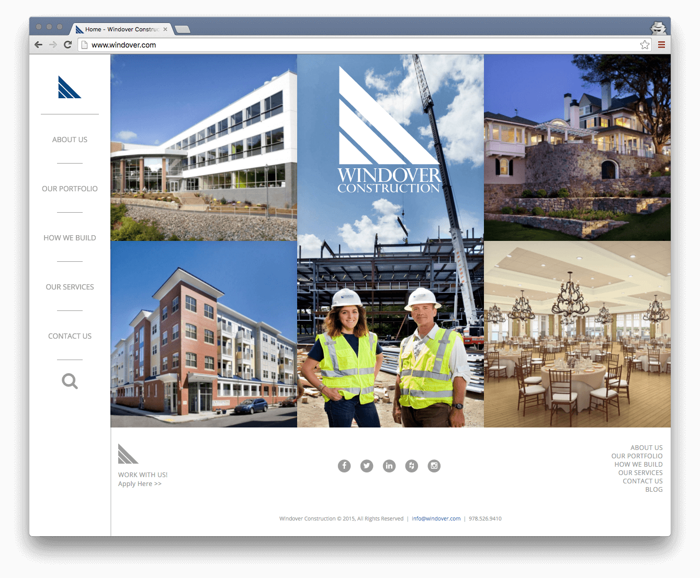

Windover Construction
Visit Site:This Wordpress based site is designed to immediately captivate the viewer with beautiful photography framed by an elegant and simple UI. The layout is fully responsive and based on the Bootstrap 3 grid.
All CSS3 effects (especially those introducing usability benefits) are integrated following a "progressive enhancement" philosophy to degrade gracefully.
Advanced Custom Fields is employed in nearly every page template allowing nearly drag-and-drop functionality with flexible content layouts. This allows for huge flexibility in page editing for the client.
Features:
- Wordpress
- Advanced Custom Fields
- Built on Roots Sage
- Bootstrap 3
- Gulp.js
- Sass
- Bower
- SVG Path Tracing
- Git
Developed by: myself
